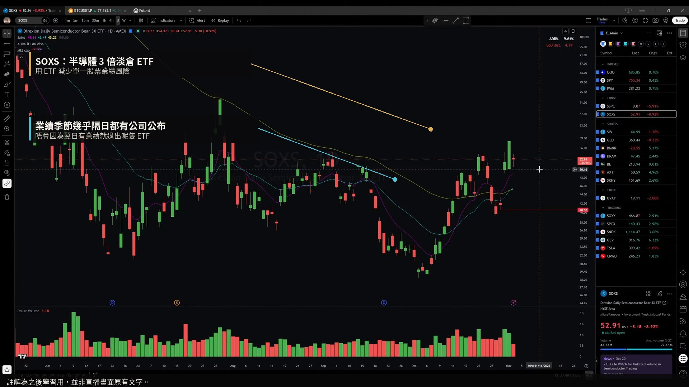

概要
用半導體淡倉 ETF，減少單一股票業績風險
2:08:14 有人問：持有 SOXS（半導體 3 倍淡倉 ETF），今日收市後有 AMD 業績，會唔會平倉。YouTube 自動字幕把代碼聽成 SOXL；Whisper 作 so xs；畫面係 SOXS（Direxion Daily Semiconductor Bear 3X ETF）。佢話大概唔會做任何嘢：第一，已有足夠 profit cushion；第二，正正因為咁先買 ETF 而唔係個別股票，可以減少單一股票風險（唔係 100%，至少大約一半）。業績季節幾乎隔兩三日就有公司公布，若每次翌日有業績就退出，就冇辦法喺業績季交易呢隻半導體 ETF。今日 Intel、明日 Marvell，之後還有 LITE、Western Digital。最後話做交易有時要接受一啲不確定性。
圖一 · 主圖
SOXS 日線：用板塊 ETF 去承擔業績季節
直播 2:08:50

原話
You're having SOXS, which is semiconductor sector 3x ETF, but today after close AMD's EP today, do you close position or no any action for that? Probably not going to do anything. The first reason is I got enough profit cushion. Second reason is I think that's why I am buying the ETF instead of the individual stocks. I think it can reduce the individual stock risk a bit, not 100%, but at least a little bit, at least like maybe like 50%. And last, like it's in the earning seasons, I think maybe every two or three days you got a few earnings. So if you are worried, if I have to sell some or even exit the position when there's earnings for a particular stock the next day, then I can't trade the semi ETF. So today we got Intel, tomorrow we got Marvell, and then the next day we got Lite, the next day we got Western Digital, then I can't trade the semi ETF during the earnings season. And sometimes I think for trading we have to accept a bit of the uncertainty.
你持有 SOXS，即半導體板塊 3 倍 ETF，但今日收市後有 AMD 業績，你會平倉定係唔做嘢？大概唔會做任何嘢。第一個原因係我已經有足夠利潤緩衝。第二個原因係，我諗正正因為咁我先買 ETF 而唔係個別股票。我覺得可以減少少少單一股票風險，唔係 100%，但至少有少少，或者大約一半。再者，而家係業績季節，可能每兩三日就有幾間公司公布。如果因為翌日某一隻有業績就擔心到要減倉甚至退出，咁我就冇辦法交易呢隻半導體 ETF。今日有 Intel，明日有 Marvell，之後有 Lite，再之後有 Western Digital，咁業績季節我就做唔到呢隻 ETF。有時做交易，我哋要接受一啲不確定性。
點樣讀
畫面係 SOXS，即半導體 3 倍淡倉 ETF。佢說 “buying the ETF instead of the individual stocks”，呢句按原話保留；唔好另行解釋成做多半導體，亦唔寫死佢而家一定持有、或者持倉方向以外嘅細節。
「大概唔會做任何嘢」有三個理由：已有利潤緩衝、用 ETF 分散單一股票風險、業績季節幾乎隔日都有公布。最後一句係接受不確定性，唔係叫人忽略業績。約 50%、profit cushion 只係原話，畫面核對唔到損益。
附註
注意事項
- 畫面代碼同全名係 SOXS（Direxion Daily Semiconductor Bear 3X ETF）。YouTube 自動字幕誤作 SOXL；較舊嘅 15 秒畫面標籤亦曾經誤標。本頁按畫面同 Whisper 嘅 so xs 更正。
- “I am buying the ETF” 係原話，喺 SOXS 呢張淡倉 ETF 畫面講。本頁只引用，唔改寫成另外一個方向。
- profit cushion 同大約 50% 只係原話。畫面睇唔到成交價、倉位或損益，所以唔寫死呢啲數字。